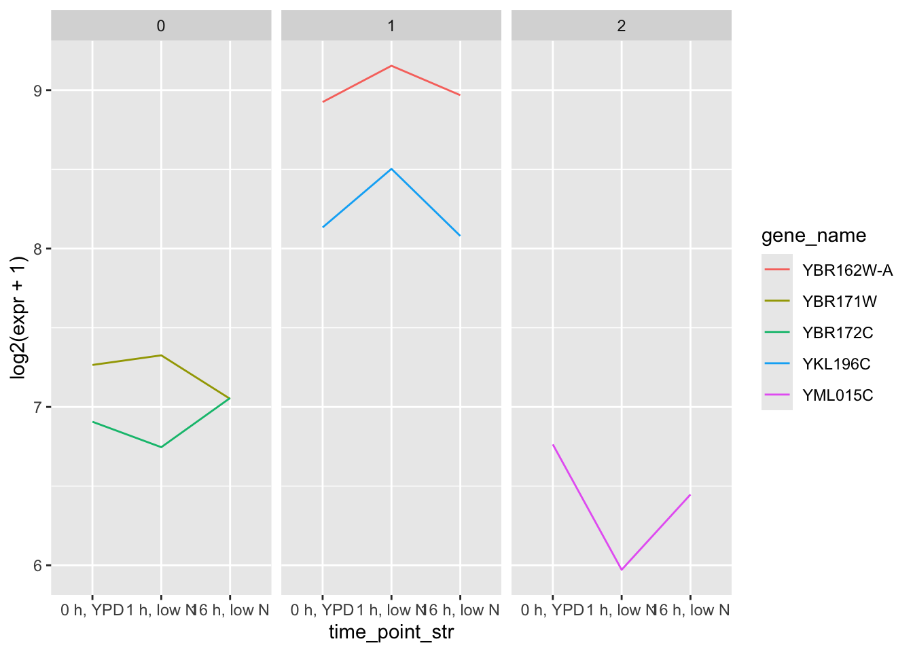
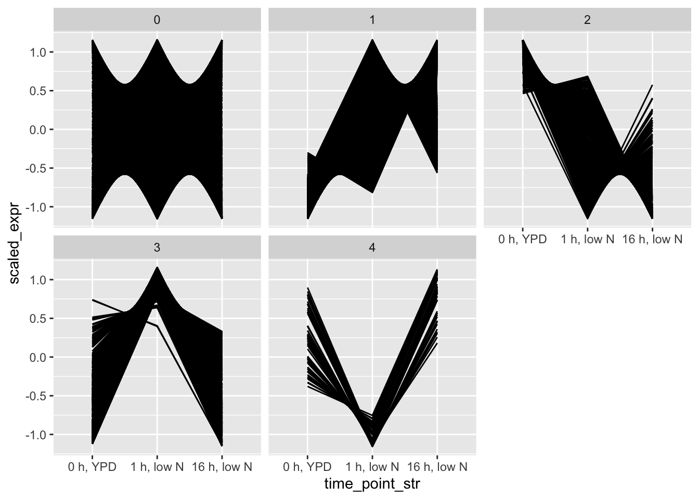
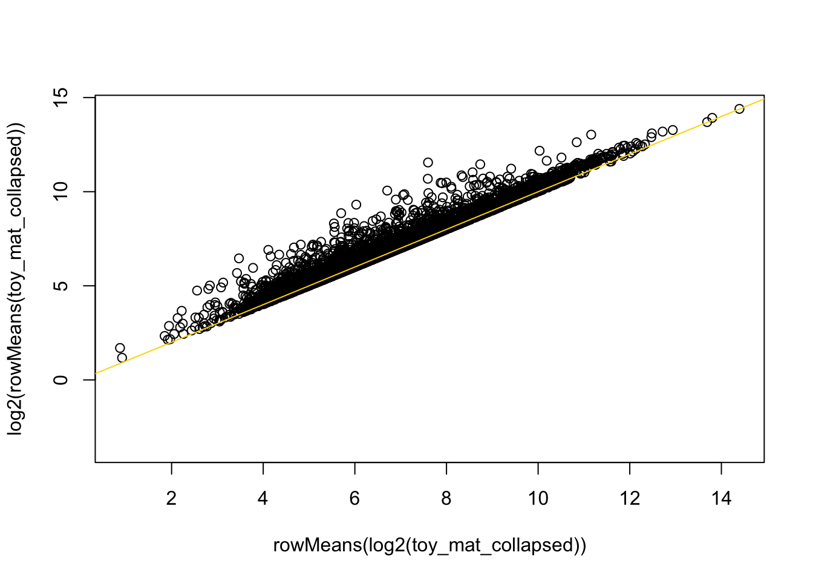
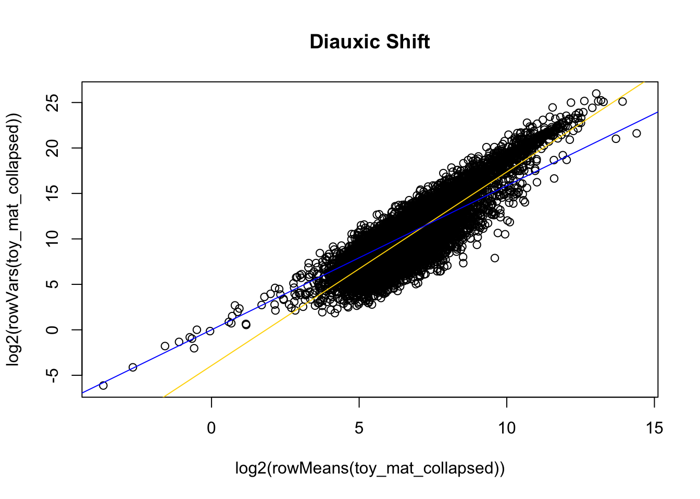
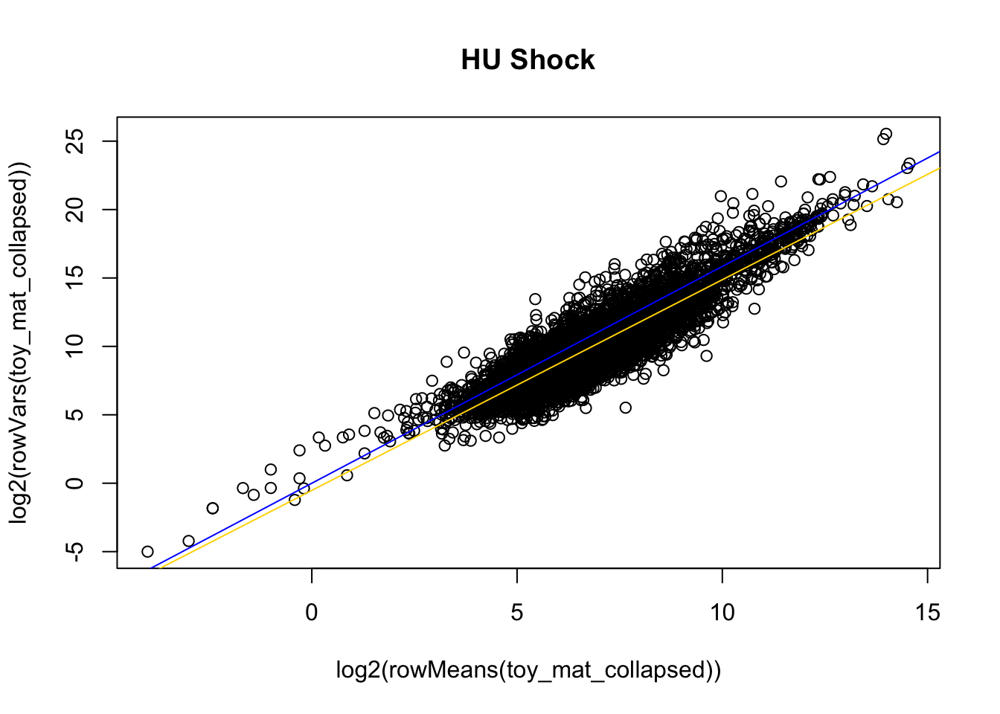
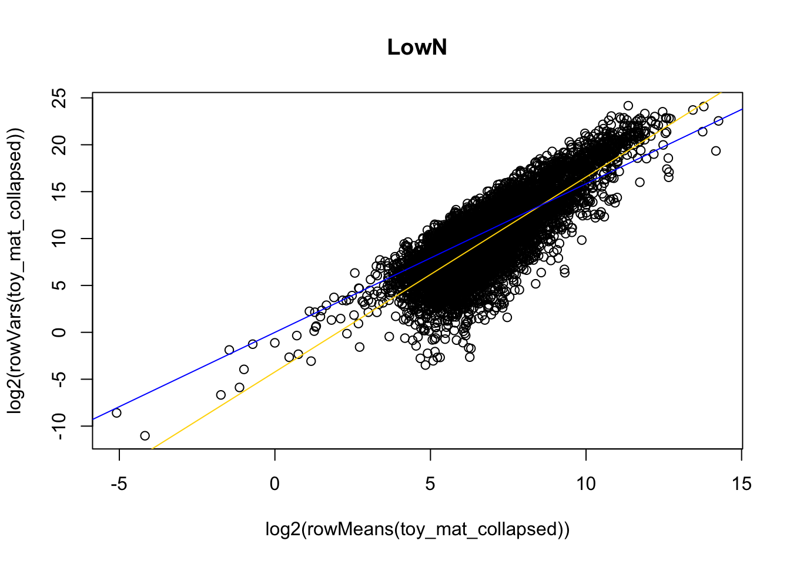
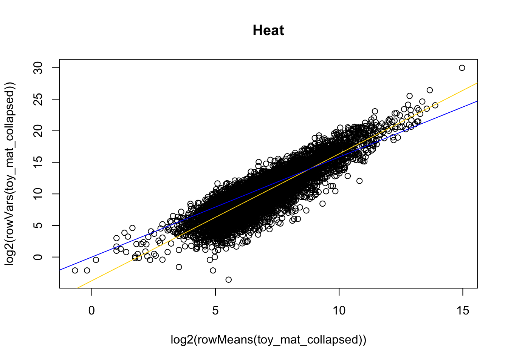
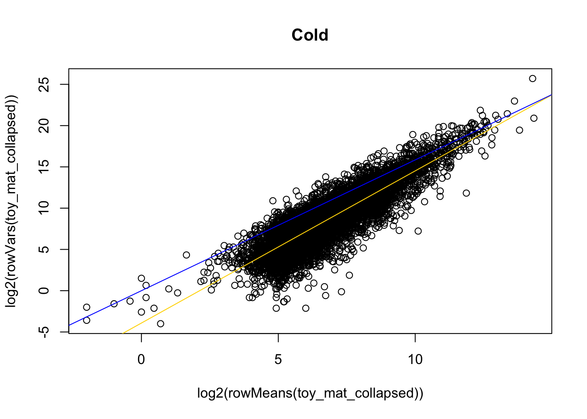

Heiarchical Clustering
Hierarchical clustering of expression data observation from combined-experiment clustering: each experiment only has a small number of distinct “shapes” to the expression a happy medium between experiment-specific clustering and combined-experiment clustering is to describe each gene by its combination of expression “shapes” in each experiment
options(stringsAsFactors = FALSE)
source("functions_for_figure_scripts.R")## Loading required package: data.table## data.table 1.17.4 using 1 threads (see ?getDTthreads). Latest news: r-datatable.com
## **********
## This installation of data.table has not detected OpenMP support. It should still work but in single-threaded mode.
## This is a Mac. Please read https://mac.r-project.org/openmp/. Please engage with Apple and ask them for support. Check r-datatable.com for updates, and our Mac instructions here: https://github.com/Rdatatable/data.table/wiki/Installation. After several years of many reports of installation problems on Mac, it's time to gingerly point out that there have been no similar problems on Windows or Linux.
## **********
##
## Attaching package: 'data.table'
##
## The following objects are masked from 'package:dplyr':
##
## between, first, last
##
## The following object is masked from 'package:purrr':
##
## transpose
##
## Loading required package: ggpattern
## Loading required package: WGCNA
## Loading required package: dynamicTreeCut
## Loading required package: fastcluster
##
## Attaching package: 'fastcluster'
##
## The following object is masked from 'package:stats':
##
## hclust
##
##
##
## Attaching package: 'WGCNA'
##
## The following object is masked from 'package:stats':
##
## corload("data_files/Clustering_Counts.RData")
set.seed(23)
# Method:
# 1) Filter out genes with low var/mean ratio (low dispersion)
# 2) Correlation cluster remaining genes
# initial values for low var filter applied in corCluster (decided in following section)
var_thresh <- 3Clustering functions and unit tests
Bootstrapping function - runs clustering repeatedly on subsets of full clustering data and labels each gene by the cluster it is most frequently in (will be tested below corCluster)
# helper function for corCluster
# runs nIter clusterings on random subsets of genes
# returns the majority vote for each gene's cluster
bootstrapClustering <- function(.filtered_cts, .nClust,
.nIter = 100, .frac = 0.75) {
clusterSubset <- function(.cts) {
gene_idxs <- sample(c(1:nrow(.cts)), size = nrow(.cts)*.frac, replace = FALSE)
frac_cts <- .cts[gene_idxs,]
cor_mat <- frac_cts |> t() |> cor(use = "pairwise.complete.obs")
tree <- hclust(as.dist(-cor_mat), method = "average")
topBranchHeight <- sort(tree$height, decreasing = TRUE)[.nClust]
tree_labels <- cutreeStatic(tree, cutHeight = topBranchHeight,
minSize = 1)
output <- rep(NA, nrow(.cts))
output[gene_idxs] <- tree_labels
return(output)
}
label_list <- vector(mode = "list", length = .nIter)
for (i in c(1:.nIter)) {
label_list[[i]] <- clusterSubset(.filtered_cts)
}
labeldf <- purrr::reduce(label_list, .f = cbind)
cat("finished iterations, nGenes x nIter:", dim(labeldf), "\n")
rownames(labeldf) <- rownames(.filtered_cts)
# aligning labels between iterations
matched <- apply(labeldf, 2, matchLabels, reference = labeldf[,1],
ignoreLabels = NA)
matched[matched > .nClust] <- NA # matchLabels adds new labels to any gene over pThreshold
labels <- apply(matched, 1, \(x) {
label <- names(sort(table(x, useNA = "no"), decreasing = TRUE))[1]
if (length(label) == 0) {
return(NA)
}
return(as.numeric(label))
})
return(labels)
}Clustering function given a count matrix where rows are genes and columns are samples/conditions, returns heirarchical cluster assignments as vector of length nGenes labels follow convention: 1) NA = too lowly expressed (mean expression < .min_expr) 2) 0 = too low variance (mean expression >= .min_expr & var expression < .min_var) 3) 1 - .nClust = clusters of co-varying genes
corCluster <- function(.cts, .nClust, .min_var = var_thresh,
.tree_too = FALSE, .gap_stat = FALSE,
.just_counts = FALSE, .bootstrapIter = 100,
.bootstrapFrac = 0.75) {
gene_idxs <- rownames(.cts)
gene_means <- apply(.cts, 1, mean, na.rm = TRUE)
gene_disps <- apply(.cts, 1, \(x) {var(x, na.rm = TRUE)/abs(mean(x, na.rm = TRUE))})
gene_disps[gene_means == 0] <- 0 # avoiding divide by 0 NaN if gene is fully not expressed
# identifying low var and low expr genes
low_var_genes <- gene_idxs[gene_disps < .min_var]
cat(length(low_var_genes), "low variance genes, assigned to 0 label\n")
good_clustering_genes <- setdiff(x = gene_idxs, y = low_var_genes)
filtered_cts <- .cts[good_clustering_genes,]
if (.gap_stat) {
cluster_fun <- function(x, k) {
list(cluster = cutree(hclust(d = as.dist(-cor(t(x), use = "pairwise.complete.obs")),
method = "average"),
k = k))}
gap_stat <- clusGap(filtered_cts, FUNcluster = cluster_fun, K.max = 10, B = 5, method = "firstmax")
return(gap_stat)
}
if (.just_counts) {
return(filtered_cts)
}
# clustering
if (sum(apply(filtered_cts, 1, \(x) {all(is.na(x))})) != 0) { # if any rows (genes) have all NA values, they will cause cor to fail below
cat("NA genes in counts matrix, returning counts matrix only\n")
return(cor_mat)
}
if (.bootstrapIter > 1) {
tree_labels <- bootstrapClustering(filtered_cts, .nClust = .nClust,
.nIter = .bootstrapIter, .frac = .bootstrapFrac)
labeldf <- tibble(gene_name = rownames(filtered_cts),
label = tree_labels) |>
bind_rows(tibble(gene_name = low_var_genes,
label = 0))
# making single tree for .treeToo = TRUE
cor_mat <- filtered_cts |> t() |> cor(use = "pairwise.complete.obs")
tree <- hclust(as.dist(-cor_mat), method = "average")
}
if (.bootstrapIter <= 1) {
cor_mat <- filtered_cts |> t() |> cor(use = "pairwise.complete.obs")
tree <- hclust(as.dist(-cor_mat), method = "average") # negative because hclust expects distance mat --- the higher the ij value the LESS similar genes i and j are
topBranchHeight <- sort(tree$height, decreasing = TRUE)[.nClust]
tree_labels <- cutreeStatic(tree, cutHeight = topBranchHeight,
minSize = 1) # guaranteeing no 0 class
cat("cutting tree at height", topBranchHeight, "into", length(unique(tree_labels)), "clusters\n")
labeldf <- tibble(gene_name = tree$labels,
label = tree_labels) |>
bind_rows(tibble(gene_name = low_var_genes,
label = 0))
}
# matching each label to each gene
# rearranging genes into their original order
outdf <- left_join(tibble(gene_name = rownames(.cts)),
labeldf, by = "gene_name")
if (!.tree_too) {
return(outdf)
}
if (.tree_too) {
return(list(tree = tree, df = outdf))
}
}Unit tests for boostrapClustering and corCluster
### tests for corCluster/bootstrapClustering
# toy genes
# known co-expressed genes in LowN
# should split these into genes highest at TP2 (^ genes)
# and genes lowest at TP2 (v genes)
toy_idxs <- c("YBR172C", "YML015C", # v genes
"YBR162W-A", "YKL196C", "YBR171W") # ^ genes (the excess of YBRs are coincidental, as I was just scrolling through that part of the module --- although the 171 172 W/C gene pair is probably overlapping)
toy_mat <- counts_list$par_LowN[toy_idxs,]
toydf <- makeDf(toy_mat, info, .join_by = "condition")
toyoutput <- corCluster(toy_mat, .nClust = 2, .tree_too = TRUE,
.bootstrapIter = 0)## 2 low variance genes, assigned to 0 label
## cutting tree at height -0.964157 into 2 clusterstoydf <- left_join(toydf, toyoutput$df, by = "gene_name")
ggplot(toydf, aes(x = time_point_str, y = log2(expr + 1))) +
geom_line(aes(group = gene_name,
color = gene_name)) +
facet_wrap(~label)
# full dataset
toy_mat <- counts_list$cer_LowN
toydf <- makeDf(toy_mat, info, .join_by = "condition")
# no bootstrap
test_labels <- corCluster(toy_mat, .nClust = 4, .min_var = 2,
.bootstrapIter = 0)## 1027 low variance genes, assigned to 0 label
## cutting tree at height -0.6549572 into 4 clusters# yes bootstrap
test_labels <- corCluster(toy_mat, .nClust = 4, .min_var = 2,
.bootstrapIter = 10)## 1027 low variance genes, assigned to 0 label
## finished iterations, nGenes x nIter: 3580 10plotdf <- toydf |>
group_by(gene_name, time_point_str) |>
summarise(expr = mean(expr)) |>
ungroup() |>
reframe(mean_expr = mean(expr),
sd_expr = sd(expr),
expr = expr,
time_point_str = time_point_str,
.by = "gene_name") |>
mutate(scaled_expr = (expr - mean_expr)/sd_expr) |>
left_join(y = test_labels, by = "gene_name")## `summarise()` has grouped output by 'gene_name'. You can override
## using the `.groups` argument.ggplot(plotdf, aes(x = time_point_str, y = scaled_expr)) +
geom_line(aes(group = gene_name)) +
facet_wrap(~label)## Warning: Removed 3 rows containing missing values or values outside the scale
## range (`geom_line()`).
Wrapper function for corCluster, repeatedly clusters list of environmental datasets
# Wrapper function that converts named list of counts (from 1 experiment) into
# tidy counts data frame with nGenes * nConditions * length(counts list) number of rows
clusterCountsList <- function(.cts_list, .nClust = 4,
.bootstrapIter = 100,
.bootstrapFrac = 0.75,
.min_var = var_thresh,
.tree_too = FALSE,
.gap_stat = FALSE,
.just_counts = FALSE) {
# giving each ortholog a unique name: YGR192C becomes YGR192C_cer
cts <- map2(.cts_list, names(.cts_list), .f = \(x, nm) {
nm <- gsub("_.*", "", nm)
rownames(x) <- paste(nm, rownames(x), sep = "_")
return(x)
})
dfs <- map(cts, makeDf, .info = info, .join_by = "condition")
outdf <- purrr::reduce(dfs, bind_rows)
if (all(unlist(map(cts, \(x) {all(colnames(x) == colnames(cts[[1]]))})))) {
cat("counts are in same order, joining counts into single matrix\n")
cts <- purrr::reduce(cts, .f = rbind)
}
else {
cat("counts colnames don't match, returning counts list \n")
return(cts)
}
# after collapsing replicates, samples should be in the same condition order
# and able to be rbound
if (.just_counts) {
filtered_cts <- corCluster(cts, .nClust = .nClust, .min_var = .min_var,
.just_counts = TRUE, .bootstrapIter = .bootstrapIter,
.bootstrapFrac = .bootstrapFrac)
return(filtered_cts)
}
if (!.tree_too) {
labeldf <- corCluster(cts, .nClust = .nClust, .min_var = .min_var,
.bootstrapIter = .bootstrapIter,
.bootstrapFrac = .bootstrapFrac)
outdf <- left_join(outdf, labeldf, by = "gene_name")
return(outdf)
}
if (.tree_too) {
output <- corCluster(cts, .nClust = .nClust, .min_var = .min_var,
.bootstrapIter = .bootstrapIter,
.bootstrapFrac = .bootstrapFrac,
.tree_too = TRUE)
output$df <- left_join(outdf, output$df, by = "gene_name")
return(output)
}
}
# tests for clusterCountsList
# par is missing 1 condition versus cer
testout <- clusterCountsList(list("cer_LowN" = counts_list$cer_LowN,
"par_LowN" = counts_list$par_LowN),
.bootstrapIter = 10, .min_var = 3)## counts are in same order, joining counts into single matrix
## 2683 low variance genes, assigned to 0 label
## finished iterations, nGenes x nIter: 6531 10testout$gene_name[1:10]## [1] "cer_YAL067C" "cer_YAL067C" "cer_YAL067C" "cer_YAL062W"
## [5] "cer_YAL062W" "cer_YAL062W" "cer_YAL061W" "cer_YAL061W"
## [9] "cer_YAL061W" "cer_YAL060W"Visualize clustering
# given a dataframe with labels for each gene, returns a facet plot
# showing expression of each gene in each cluster (usually randomly
# downsample option to save plotting computation)
plotClusters <- function(.df, .nDownsample = 0, .normalization = "scale",
.showProblem = FALSE) {
if (.nDownsample != 0) {
gene_idxs <- .df$gene_name |> sample(size = .nDownsample, replace = FALSE)
.df <- .df |> filter(gene_name %in% gene_idxs)
}
if (.normalization == "scale") {
plotdf <- .df |>
reframe(mean_expr = mean(expr, na.rm = TRUE),
sd_expr = sd(expr, na.rm = TRUE),
expr = expr,
time_point_num = time_point_num,
label = label,
.by = "gene_name") |>
mutate(plot_expr = (expr - mean_expr)/sd_expr)
}
if (.normalization == "log2") {
plotdf <- .df |>
mutate(plot_expr = log2(expr + 1))
}
p <- ggplot(plotdf, aes(x = time_point_num, y = plot_expr)) +
geom_line(aes(group = gene_name)) +
# adding mean expr line for each cluster:
geom_line(data = summarise(group_by(plotdf, time_point_num, label),
mean_expr = mean(plot_expr, na.rm = TRUE)),
aes(x = time_point_num, y = mean_expr),
color = "gold") +
# adding mean expr for all low expressed genes (group_by won't create an NA group):
geom_line(data = summarise(group_by(filter(plotdf, is.na(label)),
time_point_num),
mean_expr = mean(plot_expr, na.rm = TRUE),
label = NA),
aes(x = time_point_num, y = mean_expr),
color = "gold") +
facet_wrap(~ label)
return(p)
}Choosing a low variance threshold
Blue line in below plots represents dispersion threshold. Genes below the line will be assigned to lowly varying (static) cluster. Yellow line is best fit for mean/var relationship
var_thresh <- 3
getCollapsedCountsByExperiment <- function(.experiment) {
name_cer <- paste("cer", .experiment, sep = "_")
name_par <- paste("par", .experiment, sep = "_")
.cts_list <- list(name_cer = counts_list[[name_cer]],
name_par = counts_list[[name_par]])
cts <- map2(.cts_list, names(.cts_list), .f = \(x, nm) {
nm <- gsub("_.*", "", nm)
rownames(x) <- paste(nm, rownames(x), sep = "_")
return(x)
})
dfs <- map(cts, makeDf, .info = info, .join_by = "condition")
outdf <- purrr::reduce(dfs, bind_rows)
# after collapsing replicates, samples should be in the same condition order
# and able to be rbound
cts <- cts |>
purrr::reduce(rbind)
return(cts)
}
# HAP4
toy_mat_collapsed <- getCollapsedCountsByExperiment("HAP4")
# note that it is important to specify whether we're thresholding based on log2(mean(expr))
# versus mean(log2(expr)):
plot(rowMeans(log2(toy_mat_collapsed)),
log2(rowMeans(toy_mat_collapsed)))
abline(a = 0, b = 1, col = "gold") 
# they're mostly a similar measure,
# but for genes with high variance,
# log2(mean(expr)) tends to be higher
# (hence those spikes of genes well above the y=x)
# we are thresholding by log2(mean(expr)) because it makes more intuitive sense
plot(log2(rowMeans(toy_mat_collapsed)), log2(rowVars(toy_mat_collapsed)), main = "Diauxic Shift")
mod <- lm(log2(rowVars(toy_mat_collapsed) + 1) ~ log2(rowMeans(toy_mat_collapsed) + 1))
abline(a = mod$coefficients[1],
b = mod$coefficients[2], col = "gold")
# the point where the low expr genes "lift off" this mean-var relationship line is where
# lowly expressed genes have an abnormally high variance, variance that is more likely
# due to noise than response to the environment, and should therefore be in the low expr group
# low var filtering:
# var thresh is actually a dispersion thresh --- var/mean
# to filter out lowly varying genes, we apply disp threshold after the expr threshold
# the higher you're expressed, the more you need to vary in order to not be put in low var category
abline(a = 0, b = log2(var_thresh), col = "blue") 
# HU Shock
toy_mat_collapsed <- getCollapsedCountsByExperiment("CC")
plot(log2(rowMeans(toy_mat_collapsed)), log2(rowVars(toy_mat_collapsed)), main = "HU Shock")
mod <- lm(log2(rowVars(toy_mat_collapsed) + 1) ~ log2(rowMeans(toy_mat_collapsed) + 1))
abline(a = mod$coefficients[1],
b = mod$coefficients[2], col = "gold")
abline(a = 0, b = log2(var_thresh), col = "blue")
# LowN
toy_mat_collapsed <- getCollapsedCountsByExperiment("LowN")
plot(log2(rowMeans(toy_mat_collapsed)), log2(rowVars(toy_mat_collapsed)), main = "LowN")
mod <- lm(log2(rowVars(toy_mat_collapsed) + 1) ~ log2(rowMeans(toy_mat_collapsed) + 1))
abline(a = mod$coefficients[1],
b = mod$coefficients[2], col = "gold")
abline(a = 0, b = log2(var_thresh), col = "blue")
# LowPi
toy_mat_collapsed <- getCollapsedCountsByExperiment("LowPi")
plot(log2(rowMeans(toy_mat_collapsed)), log2(rowVars(toy_mat_collapsed)), main = "LowPi")
mod <- lm(log2(rowVars(toy_mat_collapsed) + 1) ~ log2(rowMeans(toy_mat_collapsed) + 1))
abline(a = mod$coefficients[1],
b = mod$coefficients[2], col = "gold")
abline(a = 0, b = log2(var_thresh), col = "blue")
# Heat
toy_mat_collapsed <- getCollapsedCountsByExperiment("Heat")
plot(log2(rowMeans(toy_mat_collapsed)), log2(rowVars(toy_mat_collapsed)), main = "Heat")
mod <- lm(log2(rowVars(toy_mat_collapsed) + 1) ~ log2(rowMeans(toy_mat_collapsed) + 1))
abline(a = mod$coefficients[1],
b = mod$coefficients[2], col = "gold")
abline(a = 0, b = log2(var_thresh), col = "blue")
# Cold
toy_mat_collapsed <- getCollapsedCountsByExperiment("Cold")
plot(log2(rowMeans(toy_mat_collapsed)), log2(rowVars(toy_mat_collapsed)), main = "Cold")
mod <- lm(log2(rowVars(toy_mat_collapsed) + 1) ~ log2(rowMeans(toy_mat_collapsed) + 1))
abline(a = mod$coefficients[1],
b = mod$coefficients[2], col = "gold")
abline(a = 0, b = log2(var_thresh), col = "blue")
Clustering
Running the heirarchical clustering using 2, 3, or 4 clusters per environment and a dispersion threshold of 1, 3, or 5 (using nClust=2 when modulating dispersion threshold)
# setting dispersion threshold
var_thresh <- 3
# clustering with nClust=2, disp=3
clusterdf_list <- vector(mode = "list", length = 0)
for (e in c("CC", "HAP4", "LowN", "LowPi", "Heat", "Cold")) {
cat("*********** working on 2 clusters disp=", var_thresh, "in", e, "*********** \n")
output <- clusterCountsList(counts_list[grepl(e, names(counts_list))],
.nClust = 2,
.tree_too = TRUE,
.min_var = var_thresh)
clusterdf_list[[paste(e, 2, sep = "_")]] <- output
}## *********** working on 2 clusters disp= 3 in CC ***********
## counts are in same order, joining counts into single matrix
## 1034 low variance genes, assigned to 0 label
## finished iterations, nGenes x nIter: 7446 100
## *********** working on 2 clusters disp= 3 in HAP4 ***********
## counts are in same order, joining counts into single matrix
## 2021 low variance genes, assigned to 0 label
## finished iterations, nGenes x nIter: 7005 100
## *********** working on 2 clusters disp= 3 in LowN ***********
## counts are in same order, joining counts into single matrix
## 2683 low variance genes, assigned to 0 label
## finished iterations, nGenes x nIter: 6531 100
## *********** working on 2 clusters disp= 3 in LowPi ***********
## counts are in same order, joining counts into single matrix
## 690 low variance genes, assigned to 0 label
## finished iterations, nGenes x nIter: 8544 100
## *********** working on 2 clusters disp= 3 in Heat ***********
## counts are in same order, joining counts into single matrix
## 2299 low variance genes, assigned to 0 label
## finished iterations, nGenes x nIter: 6521 100
## *********** working on 2 clusters disp= 3 in Cold ***********
## counts are in same order, joining counts into single matrix
## 4046 low variance genes, assigned to 0 label
## finished iterations, nGenes x nIter: 4474 100# converting cluster lists to a dataframe
getClusterCombination <- function(.clust_list) {
cluster_comb <- tibble()
for (nm in names(.clust_list)) {
e <- gsub("_.*", "", nm)
nclust <- gsub(".*_", "", nm)
e_clust <- .clust_list[[paste(e, nclust, sep = "_")]]$df |>
select(label, gene_name) |>
unique()
e_clust$gene_ID <- map(e_clust$gene_name, \(.g) {
return(gsub(".*_", "", .g))
}) |> unlist()
e_clust$species <- map(e_clust$gene_name, \(.g) {
return(gsub("_.*", "", .g))
}) |> unlist()
e_clust <- e_clust |>
select(gene_ID, species, label) |>
pivot_wider(id_cols = gene_ID, names_from = species, values_from = label) |>
mutate(experiment = e)
cluster_comb <- bind_rows(cluster_comb, e_clust)
}
return(cluster_comb)
}
clusterdf <- getClusterCombination(clusterdf_list)
# clustering with nClust=2, disp=1
clusterdf_list_1disp <- vector(mode = "list", length = 0)
for (e in c("CC", "HAP4", "LowN", "LowPi", "Heat", "Cold")) {
cat("*********** working on 2 clusters disp=1 in", e, "*********** \n")
output <- clusterCountsList(counts_list[grepl(e, names(counts_list))],
.nClust = 2,
.tree_too = TRUE,
.min_var = 1) # changed dispersion threshold for this run
clusterdf_list_1disp[[paste(e, 2, sep = "_")]] <- output
}## *********** working on 2 clusters disp=1 in CC ***********
## counts are in same order, joining counts into single matrix
## 64 low variance genes, assigned to 0 label
## finished iterations, nGenes x nIter: 8416 100
## *********** working on 2 clusters disp=1 in HAP4 ***********
## counts are in same order, joining counts into single matrix
## 479 low variance genes, assigned to 0 label
## finished iterations, nGenes x nIter: 8547 100
## *********** working on 2 clusters disp=1 in LowN ***********
## counts are in same order, joining counts into single matrix
## 1090 low variance genes, assigned to 0 label
## finished iterations, nGenes x nIter: 8124 100
## *********** working on 2 clusters disp=1 in LowPi ***********
## counts are in same order, joining counts into single matrix
## 15 low variance genes, assigned to 0 label
## finished iterations, nGenes x nIter: 9219 100
## *********** working on 2 clusters disp=1 in Heat ***********
## counts are in same order, joining counts into single matrix
## 736 low variance genes, assigned to 0 label
## finished iterations, nGenes x nIter: 8084 100
## *********** working on 2 clusters disp=1 in Cold ***********
## counts are in same order, joining counts into single matrix
## 1661 low variance genes, assigned to 0 label
## finished iterations, nGenes x nIter: 6859 100clusterdf_1disp <- getClusterCombination(clusterdf_list_1disp)
# clustering with nClust=2, disp=5
clusterdf_list_5disp <- vector(mode = "list", length = 0)
for (e in c("CC", "HAP4", "LowN", "LowPi", "Heat", "Cold")) {
cat("*********** working on 2 clusters disp=5 in", e, "*********** \n")
output <- clusterCountsList(counts_list[grepl(e, names(counts_list))],
.nClust = 2,
.tree_too = TRUE,
.min_var = 5) # changed dispersion threshold for this run
clusterdf_list_5disp[[paste(e, 3, sep = "_")]] <- output
}## *********** working on 2 clusters disp=5 in CC ***********
## counts are in same order, joining counts into single matrix
## 2661 low variance genes, assigned to 0 label
## finished iterations, nGenes x nIter: 5819 100
## *********** working on 2 clusters disp=5 in HAP4 ***********
## counts are in same order, joining counts into single matrix
## 3090 low variance genes, assigned to 0 label
## finished iterations, nGenes x nIter: 5936 100
## *********** working on 2 clusters disp=5 in LowN ***********
## counts are in same order, joining counts into single matrix
## 3700 low variance genes, assigned to 0 label
## finished iterations, nGenes x nIter: 5514 100
## *********** working on 2 clusters disp=5 in LowPi ***********
## counts are in same order, joining counts into single matrix
## 2141 low variance genes, assigned to 0 label
## finished iterations, nGenes x nIter: 7093 100
## *********** working on 2 clusters disp=5 in Heat ***********
## counts are in same order, joining counts into single matrix
## 3385 low variance genes, assigned to 0 label
## finished iterations, nGenes x nIter: 5435 100
## *********** working on 2 clusters disp=5 in Cold ***********
## counts are in same order, joining counts into single matrix
## 5316 low variance genes, assigned to 0 label
## finished iterations, nGenes x nIter: 3204 100clusterdf_5disp <- getClusterCombination(clusterdf_list_5disp)
# clustering with nClust=3, disp=3
clusterdf_list3 <- vector(mode = "list", length = 0)
for (e in c("CC", "HAP4", "LowN", "LowPi", "Heat", "Cold")) {
cat("*********** working on 3 clusters disp=", var_thresh, "in", e, "*********** \n")
output <- clusterCountsList(counts_list[grepl(e, names(counts_list))],
.nClust = 3, .tree_too = TRUE,
.min_var = var_thresh)
clusterdf_list3[[paste(e, 3, sep = "_")]] <- output
}## *********** working on 3 clusters disp= 3 in CC ***********
## counts are in same order, joining counts into single matrix
## 1034 low variance genes, assigned to 0 label
## finished iterations, nGenes x nIter: 7446 100
## *********** working on 3 clusters disp= 3 in HAP4 ***********
## counts are in same order, joining counts into single matrix
## 2021 low variance genes, assigned to 0 label
## finished iterations, nGenes x nIter: 7005 100
## *********** working on 3 clusters disp= 3 in LowN ***********
## counts are in same order, joining counts into single matrix
## 2683 low variance genes, assigned to 0 label
## finished iterations, nGenes x nIter: 6531 100
## *********** working on 3 clusters disp= 3 in LowPi ***********
## counts are in same order, joining counts into single matrix
## 690 low variance genes, assigned to 0 label
## finished iterations, nGenes x nIter: 8544 100
## *********** working on 3 clusters disp= 3 in Heat ***********
## counts are in same order, joining counts into single matrix
## 2299 low variance genes, assigned to 0 label
## finished iterations, nGenes x nIter: 6521 100
## *********** working on 3 clusters disp= 3 in Cold ***********
## counts are in same order, joining counts into single matrix
## 4046 low variance genes, assigned to 0 label
## finished iterations, nGenes x nIter: 4474 100clusterdf3 <- getClusterCombination(clusterdf_list3)
# clustering with nClust=4, disp=3
clusterdf_list4 <- vector(mode = "list", length = 0)
for (e in c("CC", "HAP4", "LowN", "LowPi", "Heat", "Cold")) {
cat("*********** working on 4 clusters disp=", var_thresh, "in", e, "*********** \n")
output <- clusterCountsList(counts_list[grepl(e, names(counts_list))],
.nClust = 4, .tree_too = TRUE,
.min_var = var_thresh)
clusterdf_list4[[paste(e, 4, sep = "_")]] <- output
}## *********** working on 4 clusters disp= 3 in CC ***********
## counts are in same order, joining counts into single matrix
## 1034 low variance genes, assigned to 0 label
## finished iterations, nGenes x nIter: 7446 100
## *********** working on 4 clusters disp= 3 in HAP4 ***********
## counts are in same order, joining counts into single matrix
## 2021 low variance genes, assigned to 0 label
## finished iterations, nGenes x nIter: 7005 100
## *********** working on 4 clusters disp= 3 in LowN ***********
## counts are in same order, joining counts into single matrix
## 2683 low variance genes, assigned to 0 label
## finished iterations, nGenes x nIter: 6531 100
## *********** working on 4 clusters disp= 3 in LowPi ***********
## counts are in same order, joining counts into single matrix
## 690 low variance genes, assigned to 0 label
## finished iterations, nGenes x nIter: 8544 100
## *********** working on 4 clusters disp= 3 in Heat ***********
## counts are in same order, joining counts into single matrix
## 2299 low variance genes, assigned to 0 label
## finished iterations, nGenes x nIter: 6521 100
## *********** working on 4 clusters disp= 3 in Cold ***********
## counts are in same order, joining counts into single matrix
## 4046 low variance genes, assigned to 0 label
## finished iterations, nGenes x nIter: 4474 100clusterdf4 <- getClusterCombination(clusterdf_list4)Saving
# primary clustering set we'll use:
save(clusterdf, clusterdf_list, file = "data_files/CorrelationClustering3Disp.RData")
# QC changing nClust or dispersion threshold
save(clusterdf, clusterdf_list,
clusterdf_1disp, clusterdf_list_1disp,
clusterdf_5disp, clusterdf_list_5disp,
clusterdf3, clusterdf_list3,
clusterdf4, clusterdf_list4, file = "data_files/QC_CorrelationClustering.RData")